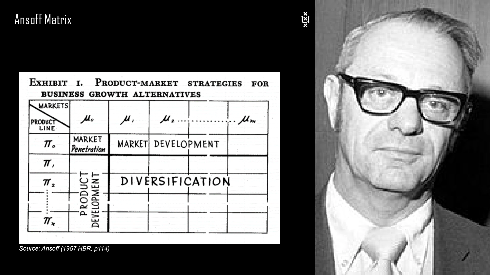

The framework
| Route | Product / market | What changes |
|---|---|---|
| Market penetration | Existing product / existing market | Expand participation within the present product–market strategy. |
| Market development | Existing product / new market | Take the existing product line to a different market need or context. |
| Product development | New product / existing market | Develop an offer for a market already being served. |
| Diversification | New product / new market | Move beyond the existing product–market combination. |
Key distinctions
The original meaning of a market
The lecture's presentation of Ansoff's original formulation uses 'missions': needs in terms of functionality, price, design, performance, accessibility or transparency. Defining a market only as a country can therefore miss a change in what the product is expected to do.
Two logical difficulties discussed in class
If a product is truly new to the firm, it may also place the firm in an unfamiliar market, blurring product development and diversification. If 'new' includes only mild modifications, diversification need not represent a radical break or exceptional risk. The matrix is only as clear as its definitions.
How to use it
- Define 'existing' and 'new' for both axes.
- Locate the proposed growth move and explain the classification.
- Assess capabilities, entry costs and uncertainty separately from the quadrant label.
Keep in mind
The matrix categorizes a direction; it does not calculate attractiveness, required resources or the probability of success. Use the diversification tests for the entry decision.
Which route changes the market but keeps the product?
Reveal the explanation
Market development.
Read the classroom original
Complete pages from the supplied lecture slides. Select a page to read, enlarge or browse its extracted text. Page numbers refer to the PDF’s physical page order.
